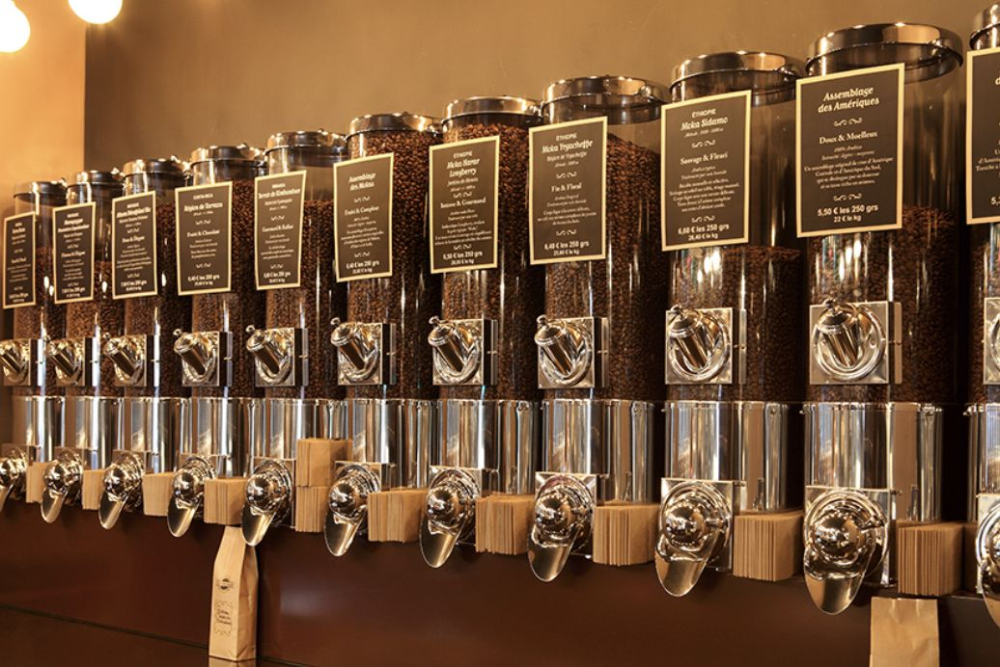
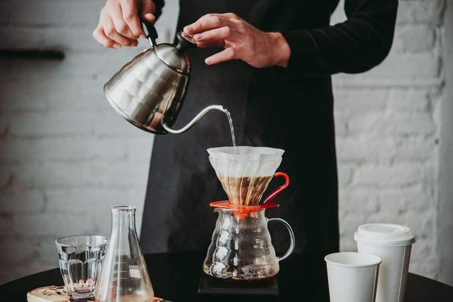
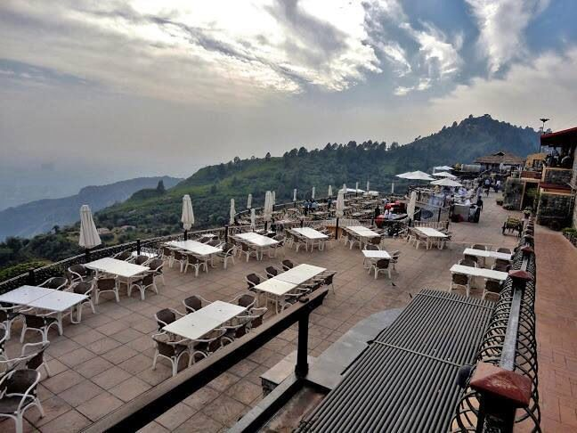
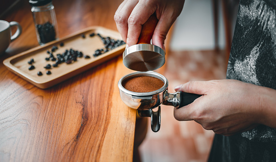
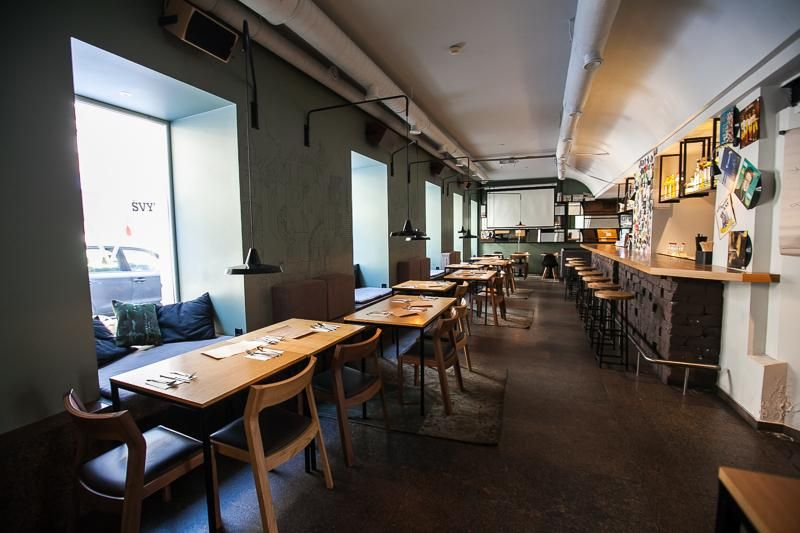
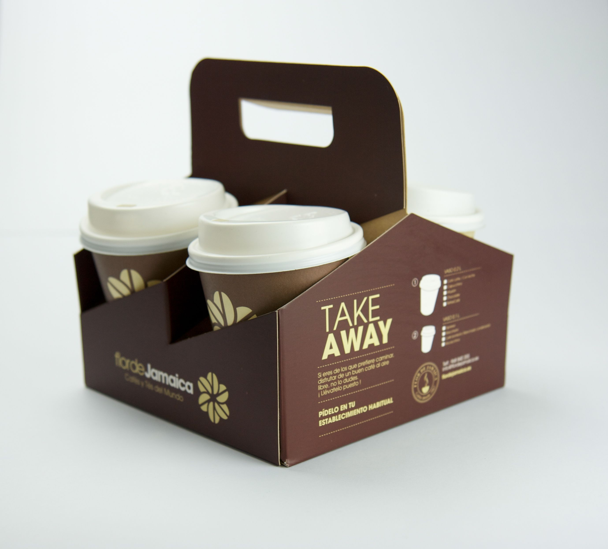

Dokumentasi Kami
Galeri Ngopa Ngopi
Sekilas suasana, proses seduh, dan produk Ngopa Ngopi sehari-hari —
biar kamu tahu apa yang menanti sebelum mampir langsung ke kedai.
Apa Saja di Galeri Ini?
- Suasana kedai dan area duduk untuk nongkrong
- Proses seduh manual oleh barista
- Etalase dan kemasan produk
- Momen racik dan penyajian kopi

Etalase menu Ngopa Ngopi, menampilkan berbagai pilihan kopi
yang siap diseduh setiap hari.

Proses seduh manual dengan dripper, bagian dari cara Ngopa Ngopi
menjaga rasa asli kopi.

Suasana exterior kedai Ngopa Ngopi yang nyaman dan santai untuk nongkrong dan menikmati kopi.

Setiap pesanan diracik langsung agar kualitas rasa tetap
terjaga.

Suasana interior Ngopa Ngopi yang nyaman dan tenang, cocok untuk belajar, bekerja, atau sekadar ngobrol santai.

Kemasan take away yang praktis untuk dinikmati di mana saja.
Suasana Ngopa Ngopi
Audio singkat untuk melengkapi suasana kedai Ngopa Ngopi.